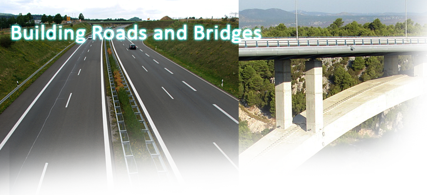

The construction of roads and bridges
Roads
Although there were highway links in Mesopotamia from as early as 3500 bc, the Romans were probably the first road-builders with fixed engineering standards. At the peak of the Roman Empire in the first century ad, Rome had road connections totalling about 85,000 kilometres.
Roman roads were constructed with a deep stone surface for stability and load-bearing. They had straight alignments and therefore were often hilly. The Roman roads remained the main arteries of European transport for many centuries, and even today many roads follow the Roman routes. New roads were generally of inferior quality, and the achievements of Roman builders were largely unsurpassed until the resurgence of road-building in the eighteenth century.
With horse-drawn coaches in mind, eighteenth-century engineers preferred to curve their roads to avoid hills. The road surface was regarded as merely a face to absorb wear, the load-bearing strength being obtained from a properly prepared and well-drained foundation. Immediately above this, the Scottish engineer John McAdam (1756-1836) typically laid crushed stone, to which stone dust mixed with water was added, and which was compacted to a thickness of just five centimetres, and then rolled. McAdam’s surface layer - hot tar onto which a layer of stone chips was laid - became known as ‘tarmacadam’, or tarmac. Roads of this kind were known as flexible pavements.
By the early nineteenth century - the start of the railway age - men such as John McAdam and Thomas Telford had created a British road network totalling some 200,000 km, of which about one sixth was privately owned toll roads called turnpikes. In the first half of the nineteenth century, many roads in the US were built to the new standards, of which the National Pike from West Virginia to Illinois was perhaps the most notable.
In the twentieth century, the ever-increasing use of motor vehicles threatened to break up roads built to nineteenth-century standards, so new techniques had to be developed.
On routes with heavy traffic, flexible pavements were replaced by rigid pavements, in which the top layer was concrete, 15 to 30 centimetres thick, laid on a prepared bed. Nowadays steel bars are laid within the concrete. This not only restrains shrinkage during setting, but also reduces expansion in warm weather. As a result, it is, possible to lay long slabs without danger of cracking.
The demands of heavy traffic led to the concept of high-speed, long-'distance roads, with access - or slip-lanes - spaced widely apart. The US Bronx River Parkway of 1925 was followed by several variants - Germany’s autobahns and the Pan American Highway. Such roads - especially the intercity autobahns with their separate multi-lane carriageways for each direction - were the predecessors of today’s motorways.
Bridges
The development by the Romans of the arched bridge marked the beginning of scientific bridge-building; hitherto, bridges had generally been crossings in the form of felled trees or flat stone blocks. Absorbing the load by compression, arched bridges are very strong. Most were built of stone,
but brick and timber were also used. A fine early example is at Alcantara in Spain, built of granite by the Romans in AD 105 to span the River Tagus. In modern times, metal and concrete arched bridges have been constructed. The first significant metal bridge, built of cast iron in 1779, still stands at Ironbridge in England.
Steel, with its superior strength-to-weight ratio, soon replaced iron in metal bridge-work. In the railway age, the truss (or girder) bridge became popular. Built of wood or metal, the truss beam consists of upper and lower horizontal booms joined by vertical or inclined members.
The suspension bridge has a deck supported by suspenders that drop from one or more overhead cables. It requires strong anchorage at each end to resist the inward tension of the cables, and the deck is strengthened to control distortion by moving loads or high winds. Such bridges are nevertheless light, and therefore the most suitable for very long spans. The Clifton Suspension Bridge in the UK, designed by Isambard Kingdom Brunei (1806—59) to span the Avon Gorge in England, is famous both for its beautiful setting and for its elegant design. The 1998 Akashi Kaikyo Bridge in Japan has a span of 1,991 metres, which is the longest to date.
Cantilever bridges, such as the 1889 Forth Rail Bridge in Scotland, exploit the potential of steel construction to produce a wide clearwater space. The spans have a central supporting pier and meet midstream. The downward thrust, where the spans meet, is countered by firm anchorage of the spans at their other ends. Although the suspension bridge can span a wider gap, the cantilever is relatively stable, and this was important for nineteenth-century railway builders. The world’s longest cantilever span - 549 metres - is that of the Quebec rail bridge in Canada, constructed in 1918.
Questions 1-3
Label the diagram below.
Choose NO MORE THAN TWO WORDS AND/OR A NUMBER from the passage for each answer.

1
2
3
Questions 4-7
Do the following statements agree with the information given in Reading Passage 1 ?
Write
TRUE if the statement agrees with the information
FALSE if the statement contradicts the information
NOT GIVEN if there is no information on this
4 Road construction improved continuously between the first and eighteenth centuries.
5 In Britain, during the nineteenth century, only the very rich could afford to use toll roads.
6 Nineteenth-century road surfaces were inadequate for heavy motor traffic.
7 Traffic speeds on long-distance highways were unregulated in the early part of the twentieth century.
Questions 8-13
Complete the table below.
Use ONE WORD ONLY from the passage for each answer.
Bridges
|
---End of the Test---
Please Submit to view your score, solution and explanations.